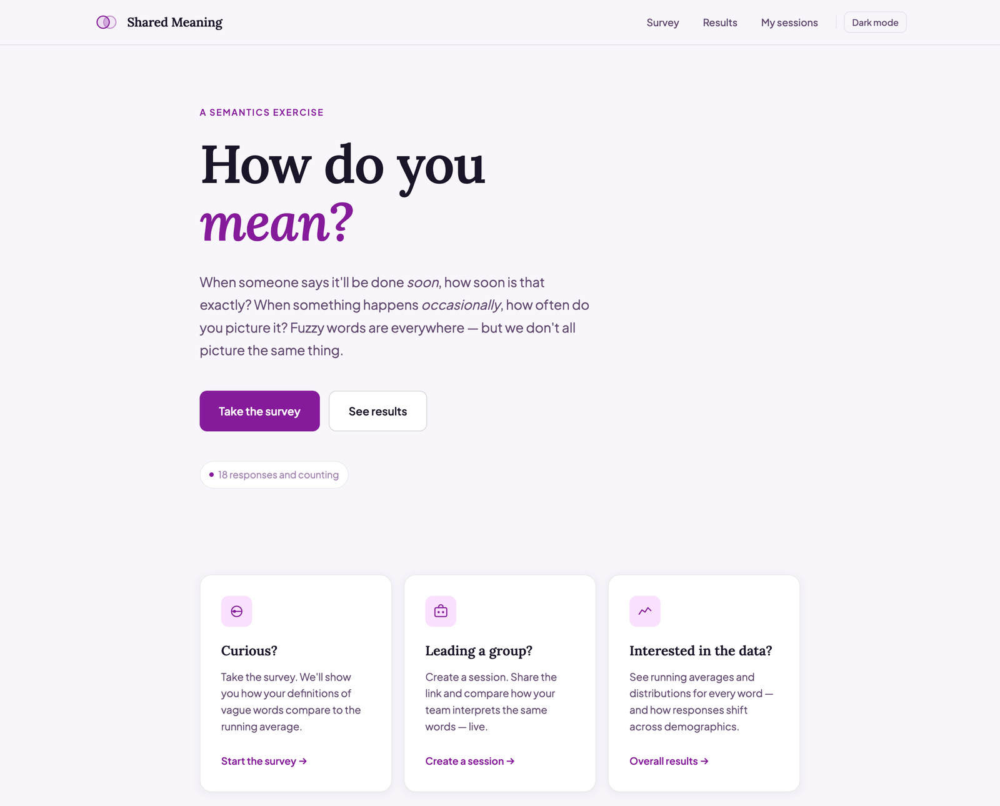

Shared Meaning
A linguistic curiosity turned into sociological data-gathering, this application explores whether you and your acquaintances are speaking the same language.

What it is
Users evaluate the quantified probability they associate with words and phrases, and then find out how their evaluation compares to others', including a longitudinal average of all participants.
Why I work on it
I challenged my colleague Eric Bower to build the original version of this app as a presentation ice-breaker. Re-imagining it in 2025 was a great test and introduction to Claude Code.
I have yet to not be surprised and intrigued by a group's results when taking this survey. It's an excellent, vivid reminder that though we might speak the same language, we are often imprecisely communicating with each other.
What's different
- Pure Python Eric built the original with Python and Jinja templating — a choice I honored in the re-boot.
- Run your own group It's built so that anyone can use it as a group exercise.
- Long-term data The app is designed to amass more and more data for real significance.
Check it out!
Shared Meaning lives on its own site. This button takes you there.